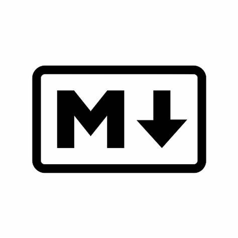

Una mica de mi
Experiència laboral:
Actualment treballant a Nexus Geogràfics, on estic desenvolupant tasques tant de desenvolupador frontend, com backend en aplicacions web basades en mapes. Desde Desembre 2024
- Gestió de bases de dades de forma segura
- Mostra de dades sobre un mapa en temps real utilitzant els serveis de ArcGis
- Creació de serveis API per a l'actualització constant de informació sobre els mapes
- Gestió d'esdeveniments
Estudis
Grau mitjà: electromecànica de vehicles
Grau superior: automoció
Grau superior: Disseny d'aplicacions web
Llenguatges:

JavaScript

TypeScript

PHP

MarkDown
C#

HTML
CSS

SQL
Frameworks:

Vue
React
NestJs
Tecnologies:
Node JS
Docker

ArcGis